モデルの推定と予測
(Press ? for help, n and p for next and previous slide)
村田 昇
確率過程
時間を添え字として持つ確率変数列
\begin{equation} X_{t},\;t=1,\dotsc,T \end{equation}
定義
平均\(0\)，分散\(\sigma^{2}\) である確率変数の 確率分布\(P\)からの 独立かつ同分布な確率変数列
\begin{equation} X_{t} = \epsilon_{t}, \quad \epsilon_{t} \overset{i.i.d.}{\sim} P \end{equation}
定義
\(\mu,\alpha\) を定数として
\begin{equation} X_{t}=\mu+\alpha t+\epsilon_{t}, \quad \epsilon_{t} \sim \mathrm{WN}(0,\sigma^2) \end{equation}で定義される確率過程
定義
\(X_0\) を定数もしくは確率変数として
\begin{equation} X_{t}=X_{t-1}+\epsilon_{t}, \quad \epsilon_{t} \sim \mathrm{WN}(0,\sigma^2) \end{equation}で帰納的に定義される確率過程
定義 (次数\(p\)のARモデル)
\(a_1,\dotsc,a_p\)を定数とし， \(X_1,\dotsc,X_p\)が初期値として与えられたとき，
\begin{equation} X_{t}=a_1X_{t-1}+\cdots+a_pX_{t-p}+\epsilon_{t}, \quad \epsilon_{t} \sim \mathrm{WN}(0,\sigma^2) \end{equation}で帰納的に定義される確率過程
定義 (次数\(q\) のMAモデル)
\(b_1,\dotsc,b_q\)を定数とし， \(X_1,\dotsc,X_q\)が初期値として与えられたとき
\begin{equation} X_{t} = b_1\epsilon_{t-1}+\cdots+b_q\epsilon_{t-q}+\epsilon_{t}, \quad \epsilon_{t} \sim \mathrm{WN}(0,\sigma^2) \end{equation}で定義される確率過程
定義 (次数\((p,q)\)のARMAモデル)
\(a_1,\dotsc,a_p,b_1,\dotsc,b_q\) を定数とし， \(X_1,\dotsc,X_{\max\{p,q\}}\) が初期値として与えられたとき
\begin{align} X_{t} &= a_1X_{t-1}+\cdots+a_pX_{t-p}\\ &\quad+ b_1\epsilon_{t-1}+\cdots+b_q\epsilon_{t-q} +\epsilon_{t},\\ &\quad \epsilon_{t} \sim \mathrm{WN}(0,\sigma^2) \end{align}で帰納的に定まる確率過程
\(X_{t}\) と \(X_{t+h}\) の共分散は時点\(t\)によらずラグ\(h\)のみで定まる
自己共分散 (定常過程の性質よりラグは\(h\ge0\)を考えればよい)
\begin{equation} \gamma(h) = \mathrm{Cov}(X_{t},X_{t+h}) \end{equation}
\(X_{t}\) と \(X_{t+h}\) の相関も\(t\)によらずラグ\(h\)のみで定まる
自己相関
\begin{equation} \rho(h) =\gamma(h)/\gamma(0) = \mathrm{Cov}(X_{t},X_{t+h})/\mathrm{Var}(X_{t}) \end{equation}
ラグ\(h\)の自己共分散の推定 : 標本自己共分散
\begin{equation} \hat\gamma(h) = \frac{1}{T}\sum_{t=1}^{T-h}(X_{t}-\bar{X})(X_{t+h}-\bar{X}) \end{equation}
\(\bar{X}=\frac{1}{T}\sum_{t=1}^TX_{t}\) は標本平均
ラグ\(h\)での自己相関の推定 : 標本自己相関
\begin{equation} \hat\gamma(h)/\hat\gamma(0) = \frac{\sum_{t=1}^{T-h}(X_{t}-\bar{X})(X_{t+h}-\bar{X})}{\sum_{t=1}^T(X_{t}-\bar{X})^2} \end{equation}
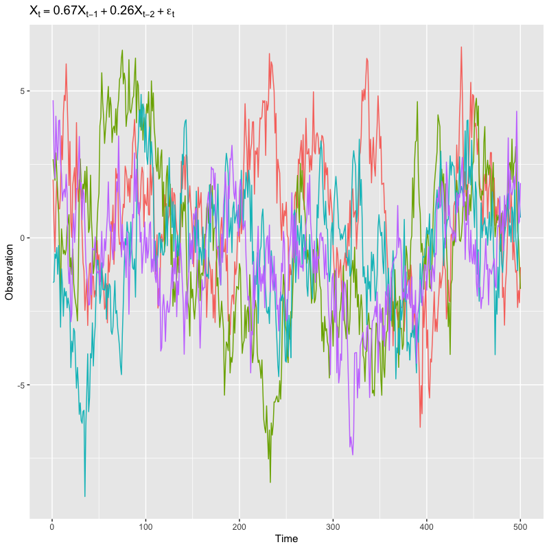
Figure 1: 同じモデルに従うAR過程の例
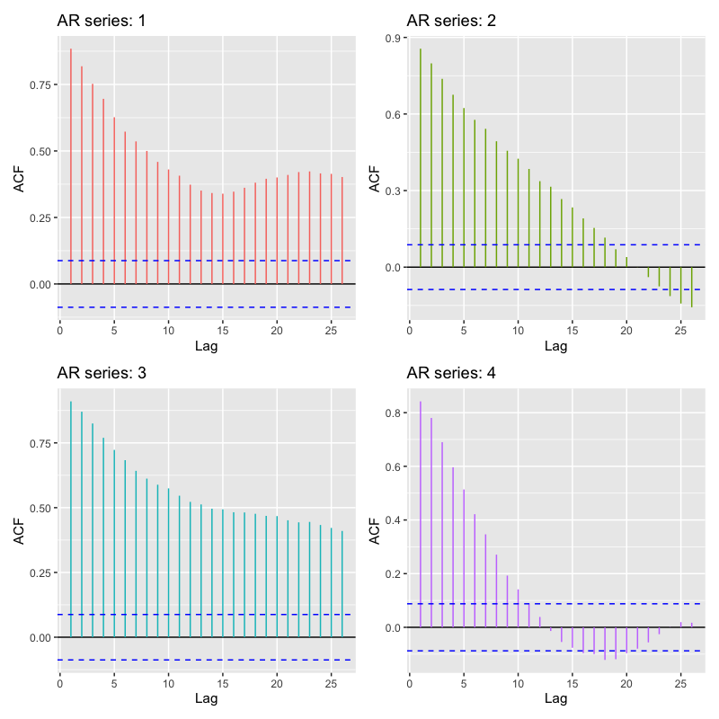
Figure 2: AR過程の自己相関
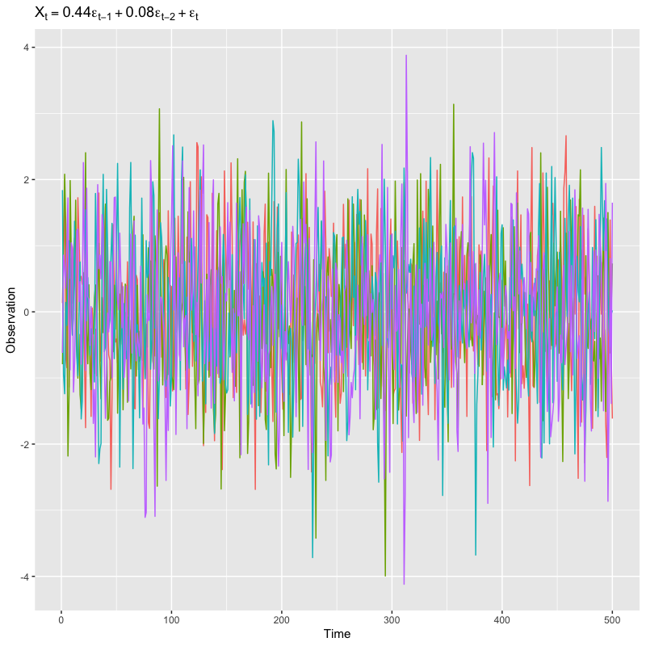
Figure 3: 同じモデルに従うMA過程の例
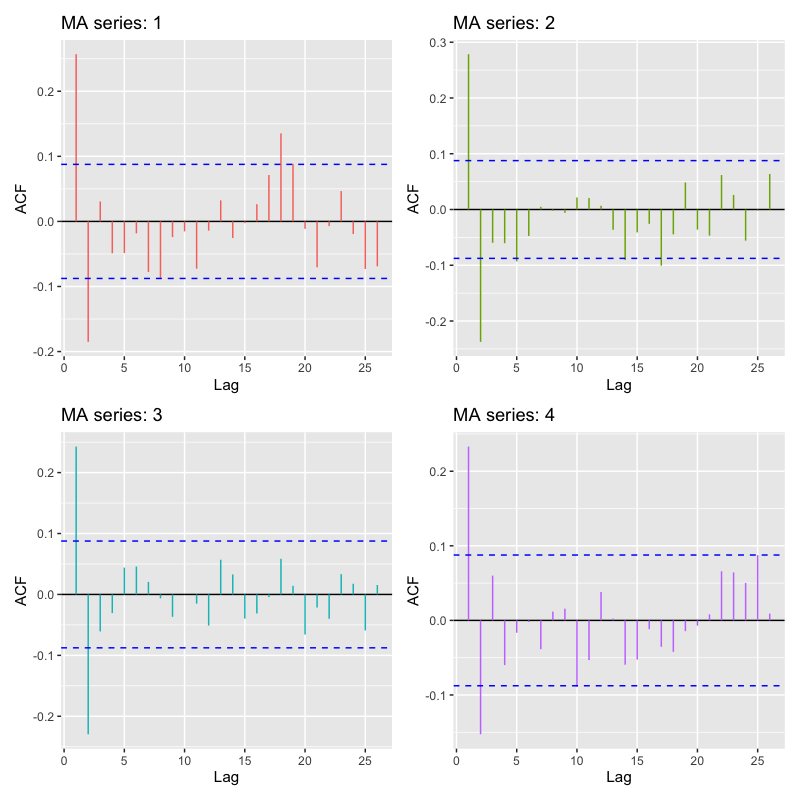
Figure 4: MA過程の自己相関
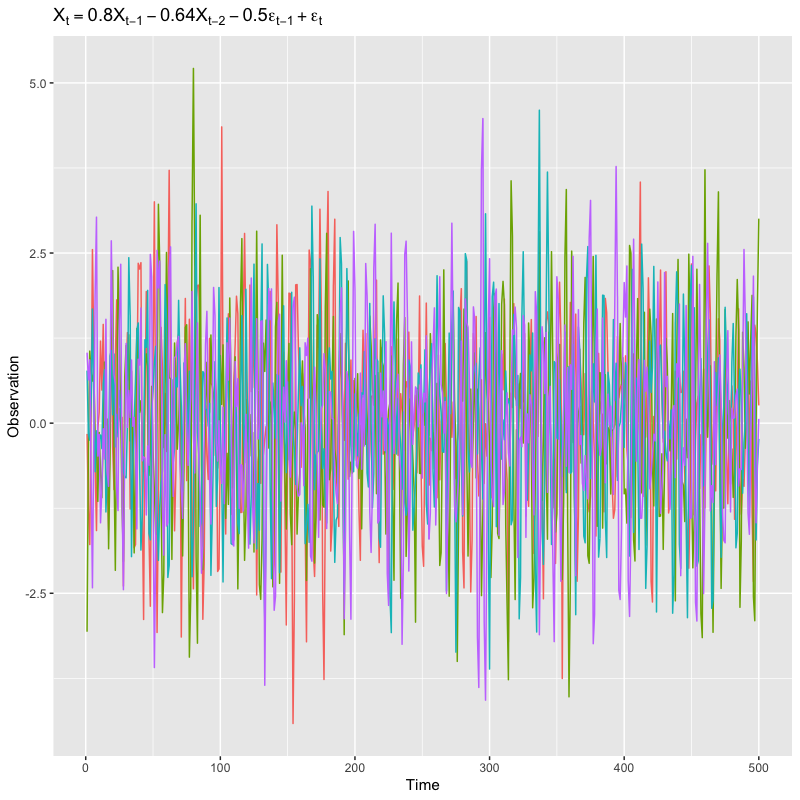
Figure 5: 同じモデルに従うARMA過程の例
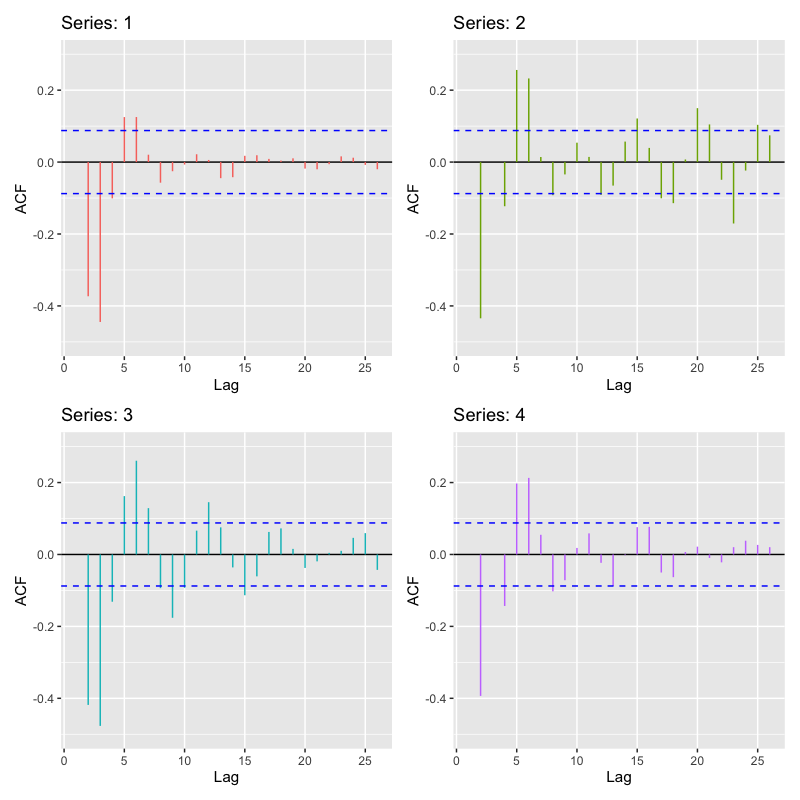
Figure 6: ARMA過程の自己相関
関数 feats::ACF()
ACF(.data, y, ..., lag_max = NULL,
type = c("correlation", "covariance", "partial"),
na.action = na.contiguous, demean = TRUE, tapered = FALSE)
#' .data: 時系列データ (tsibbleクラス)
#' y: 計算対象の列名
#' type: 標準は相関, 共分散と偏相関を選ぶこともできる
#' na.action: 欠損値の処理，標準は欠損を含むと計算しない
#' demean: 共分散の計算において平均を引くか否か
acf() と違いlag=0を表示しないautoplot() に渡せばグラフを描画する典型的な使い方
toy_acf <- arima.sim(model = list(ar = c(0.8, -0.64),
ma = c(-0.5)),
n = 200) |>
as_tsibble() |> ACF(value)
toy_acf |> autoplot()
\(X_{t}\) と \(X_{t+h}\) の共分散は時点\(t\)によらずラグ\(h\)のみで定まる
自己共分散
\begin{equation} \gamma(h) = \mathrm{Cov}(X_{t},X_{t+h}) = \mathbb{E}[X_{t}X_{t+h}] \end{equation}
\(X_{t}\)と\(X_{t+h}\)の相関も\(t\)によらずラグ\(h\)のみで定まる
自己相関係数
\begin{equation} \rho(h) =\mathrm{Cov}(X_{t},X_{t+h})/\mathrm{Var}(X_{t}) =\gamma(h)/\gamma(0) \end{equation}
AR(p)モデル :
\begin{equation} X_{t} = a_{1}X_{t-1}+a_{2}X_{t-2}+\dotsb+a_{p}X_{t-p}+\epsilon_{t} \end{equation}
係数と自己共分散の関係
\begin{align} \gamma(h) &= \mathbb{E}[X_{t}X_{t+h}]\\ &= \mathbb{E}[X_{t}(a_{1}X_{t+h-1}+\dotsb+a_{p}X_{t+h-p}+\epsilon_{t+h})]\\ &= a_{1}\mathbb{E}[X_{t}X_{t+h-1}] +\dotsb +a_{p}\mathbb{E}[X_{t}X_{t+h-p}] +\mathbb{E}[X_{t}\epsilon_{t+h}]\\ &= a_{1}\gamma(h-1) +\dotsb+ a_{p}\gamma(h-p) \end{align}
\(1\le h\le p\) を考えると以下の関係が成り立つ
\begin{equation} \begin{pmatrix} \gamma(1)\\ \gamma(2)\\ \vdots\\ \gamma(p) \end{pmatrix} = \begin{pmatrix} \gamma(0)&\gamma(-1)&\dots&\gamma(-p+1)\\ \gamma(1)&\gamma(0)&\dots&\gamma(-p+2)\\ \vdots&\vdots&\ddots&\vdots\\ \gamma(p-1)&\gamma(p-2)&\dots&\gamma(0) \end{pmatrix} \begin{pmatrix} a_{1}\\ a_{2}\\ \vdots\\ a_{p} \end{pmatrix} \end{equation}
AR(p)モデル
\begin{equation} X_{t} = a_{1}X_{t-1}+a_{2}X_{t-2}+\dotsb+a_{p}X_{t-p}+\epsilon_{t} \end{equation}
ラグ\(p\)の 偏自己相関係数
AR(p)モデルを仮定したときの\(a_{p}\)の推定値 (Yule-Walker方程式の解)
ラグ\(p\)の特別な 自己相関係数
\(a_{1}=a_{2}=\dotsb=a_{p-1}=0\)のときの\(\rho(p)\) (特殊なモデルにおける解釈)
\begin{equation} \mathbb{E}[X_{t}X_{t+p}]=a_{p}\mathbb{E}[X_{t}X_{t}] \;\Rightarrow\; \gamma(p)=a_{p}\gamma(0) \;\Rightarrow\; \rho(p)=a_{p} \end{equation}
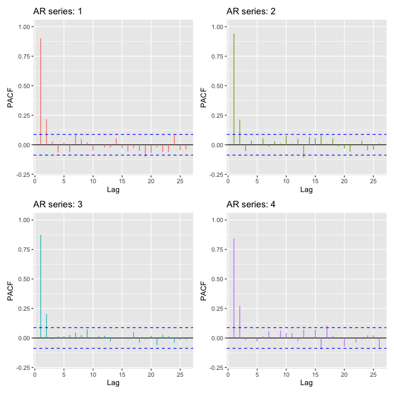
Figure 7: AR過程の偏自己相関
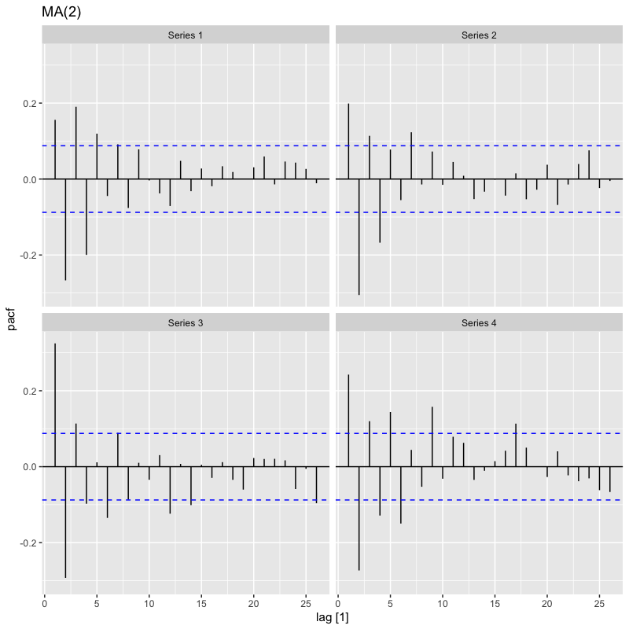
Figure 8: MA過程の偏自己相関
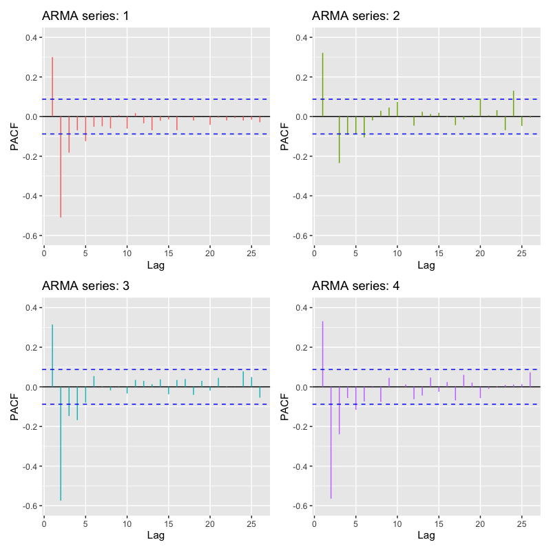
Figure 9: ARMA過程の偏自己相関
階差の利用
\begin{equation} X_{t}=X_{t-1}+\epsilon_{t} \quad\Rightarrow\quad Y_{t}=X_{t}-X_{t-1}=\epsilon_{t} \end{equation}
対数変換の利用
\begin{equation} X_{t}=(1+\epsilon_{t})X_{t-1} \quad\Rightarrow\quad Y_{t}=\log(X_{t})-\log(X_{t-1}) =\log(1+\epsilon_{t}) \simeq\epsilon_{t} \end{equation}
関数 fabletools::model()
model(.data, ...)
#' .data: 時系列データ (tsibbleクラス)
#' ...: モデルを指定
関数 fable::AR()
AR(formula, ic = c("aicc", "aic", "bic"), ...)
#' formula: 時系列モデル
#' ic: モデル選択のための情報量規準
stats::ar.ols() と同様の実装典型的な使い方
toy_ar <- arima.sim(model = list(ar = c(0.7,-0.6, 0.5)),
n = 1000) |> as_tsibble()
toy_ar |> model(AR(value)) # モデルを自動選択する場合
toy_ar |> model(AR(value ~ order(3))) # モデルの次数を指定する場合
toy_ar |> model(AR(value ~ 0 + order(3))) # 平均項を含めない場合
関数 fable::ARIMA()
ARIMA(formula, ic = c("aicc", "aic", "bic"),
stepwise = TRUE, greedy = TRUE, approximation = NULL, ...)
#' formula: 時系列モデル
#' ic: モデル選択のための情報量規準
#' stepwise/greedy/approximation: モデル探索のための設定
#' その他詳細は '?fable::ARIMA' を参照
stats::arima() と同様の実装典型的な使い方
toy_arima <- arima.sim(model = list(order = c(2,1,2),
ar = c(0.8,-0.5),
ma = c(-0.2,0.2)),
n = 1000) |> as_tsibble()
toy_arima |> model(ARIMA(value)) # 自動選択
toy_arima |> model(ARIMA(value ~ 0 + pdq(2,1,2))) # 次数を指定
関数 fabletools::report()
report(object, ...)
#' object: 推定された時系列モデル
関数 fabletools::tidy()
tidy(object, ...)
#' object: 推定された時系列モデル
#' 詳細は '?fabletools::tidy.mdl_df' を参照
coef() でも可
関数 fabletools::augment()
augment(object, ...)
#' object: 推定された時系列モデル
#' 詳細は '?fabletools::augment.mdl_df' を参照
fitted()/fitted.values() でも可residuals()/resid() でも可
関数 fabletools::accuracy()
accuracy(object, ...)
#' object: 推定された時系列モデル
#' 詳細は '?fabletools::accuracy.mdl_df' を参照
関数 fabletools::glance()
glance(object, ...)
#' object: 推定された時系列モデル
#' 詳細は '?fabletools::glance.mdl_df' を参照
関数 feasts::gg_tsresiduals()
gg_tsresiduals(data, type = "innovation", ...)
#' data: 推定された時系列モデル
feasts::gg_tsdisplay() が利用される典型的な使い方
toy_fit <- toy_arima |> model(ARIMA(value))
toy_fit |> accuracy()
toy_fit |> glance()
toy_fit |> gg_tsresiduals()
AR() を用いて係数を推定しなさいARIMA() を用いて係数を推定しなさい
関数 tsibble::tsibble()
tsibble(..., key = NULL, index, regular = TRUE, .drop = TRUE)
#' ...: データ
#' key: indexの補助情報(同じ時間の異なるデータを表す)
#' index: 時間情報を表す列を設定
関数 tsibble::as_tsibble()
as_tsibble(x, key = NULL, index,
regular = TRUE, validate = TRUE, .drop = TRUE, ...)
#' x: データ(時系列オブジェクトやデータフレーム)
典型的な使い方
tsibble(date = as_date("2024-01-01") + 0:9,
value = rnorm(10))
tibble(year = 2001:2020,
value = rnorm(20)) |>
as_tsibble(index = year) # yearを時間情報に指定
AirPassengers |> as_tsibble() # 時系列オブジェクトの変換
関数 tsibble::filter_index()
filter_index(.data, ..., .preserve = FALSE)
#' .data: tsibbleオブジェクト
#' ...: 区間を表す式 (~ end, start ~ end, start ~ .)
典型的な使い方
AirPassengers |>
as_tsibble() |>
filter_index("1955-10" ~ "1956-03")
東京の気候データを用いて以下の問に答えなさい
tw_data <- read_csv("data/tokyo_weather.csv")
tsibble クラスに変換しなさい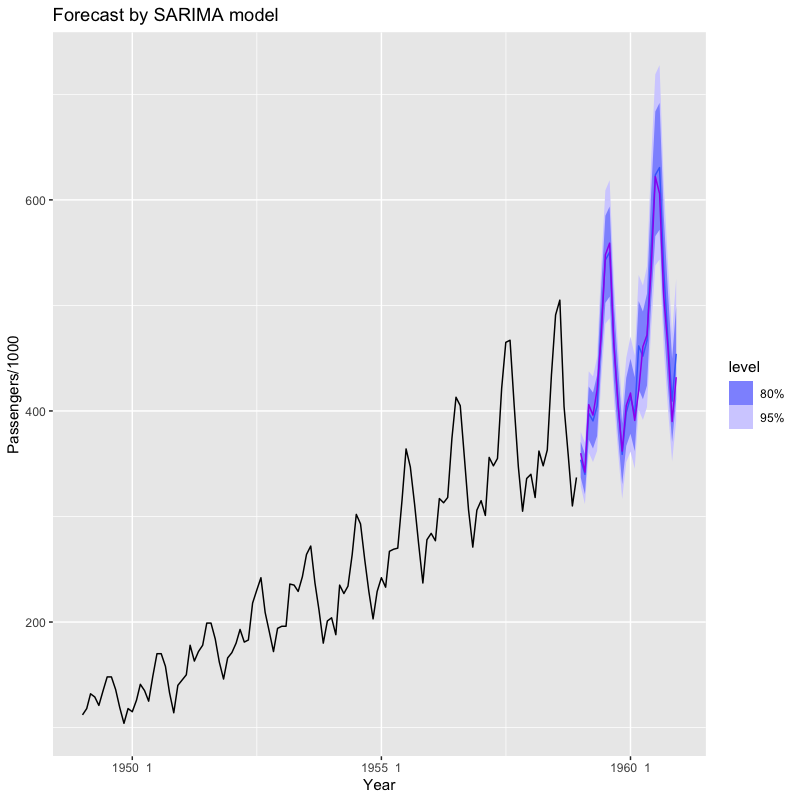
Figure 10: ARIMAモデル(階差ありARMA)による予測
トレンド成分+季節成分+ランダム成分への分解
\begin{equation} X_{t}=T_{t}+S_{t}+R_{t} \end{equation}あるいは
\begin{equation} X_{t}=T_{t}\times S_{t}\times R_{t}\qquad (\log X_{t}=\log T_{t} + \log S_{t} + \log R_{t}) \end{equation}
指数平滑化を用いた加法的分解モデルによる予測
\begin{align} l_{t} &= \alpha (x_{t}-s_{t{-}m}) + (1-\alpha) (l_{t{-}1}+b_{t{-}1})\\ b_{t} &= \beta (l_{t}-l_{t{-}1}) + (1-\beta) b_{t{-}1}\\ s_{t} &= \gamma (x_{t}-l_{t}) + (1-\gamma) s_{t{-}m}\\ \hat{x}_{t{+}h|t} &= l_{t} + b_{t}\times h + s_{t{-}m{+}h} \end{align}
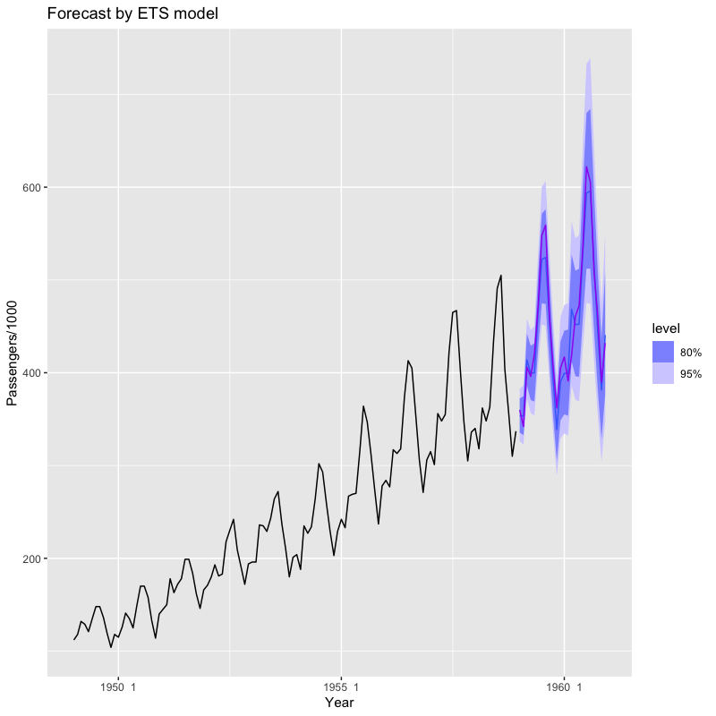
Figure 11: ETSモデル(expornential smoothing)による予測
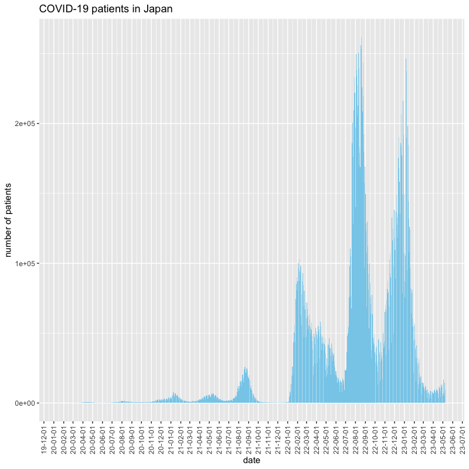
Figure 12: 全国の感染者数
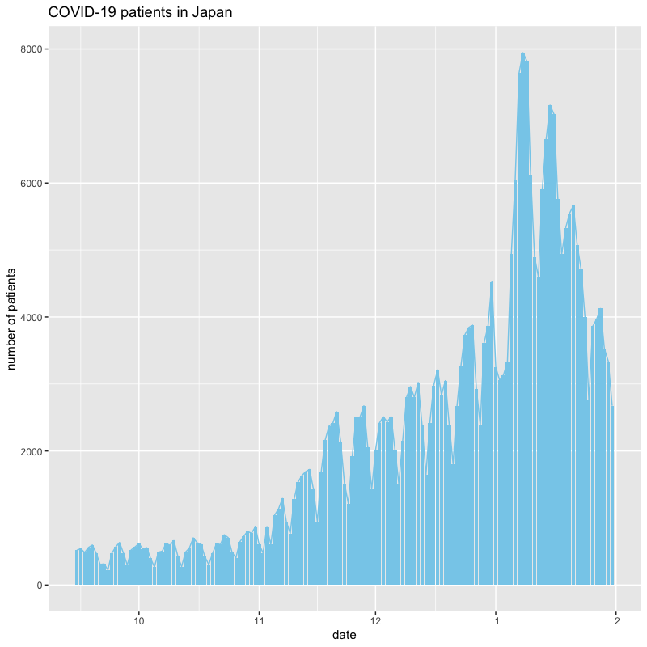
Figure 13: 第3波の感染者数
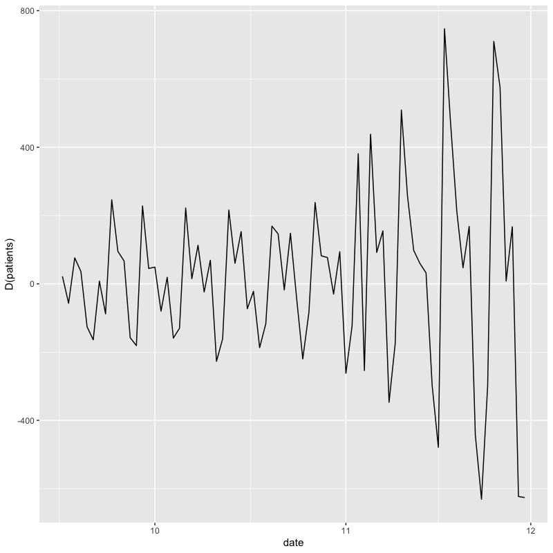
Figure 14: 時系列 (階差)
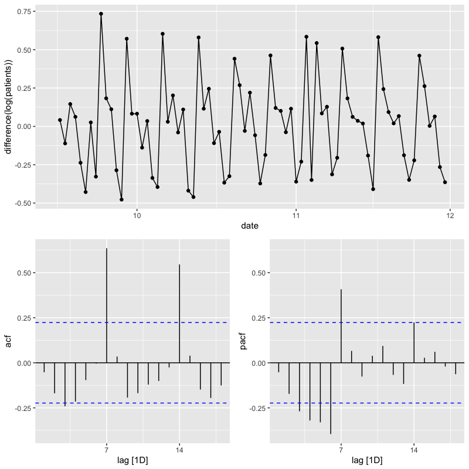
Figure 15: 時系列 (対数変換+階差)
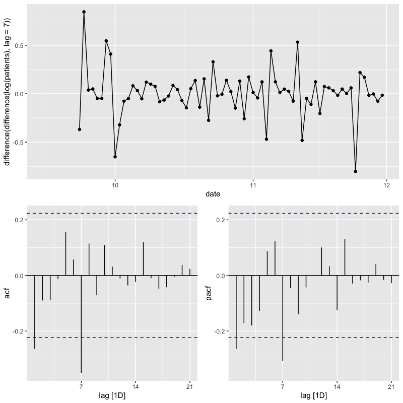
Figure 16: 時系列 (対数変換+階差+7日階差)
Series: patients
Model: ARIMA(1,1,1)(2,0,0)[7]
Transformation: log(patients)
Coefficients:
ar1 ma1 sar1 sar2
0.4493 -0.8309 0.3709 0.4232
s.e. 0.1635 0.0981 0.1212 0.1353
sigma^2 estimated as 0.03811: log likelihood=15.04
AIC=-20.07 AICc=-19.21 BIC=-8.42
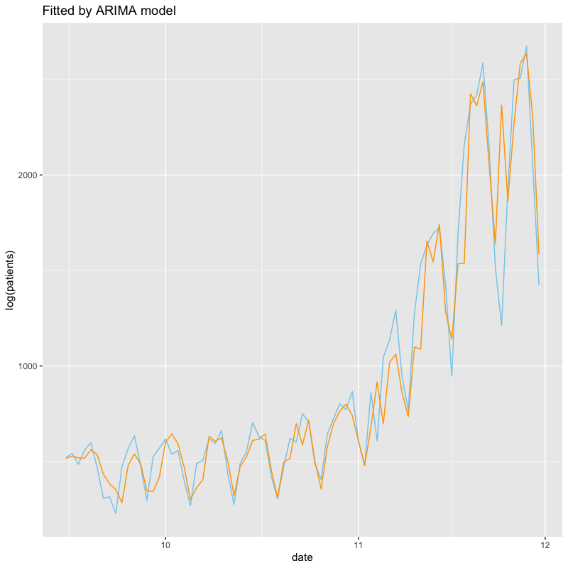
Figure 17: あてはめ値
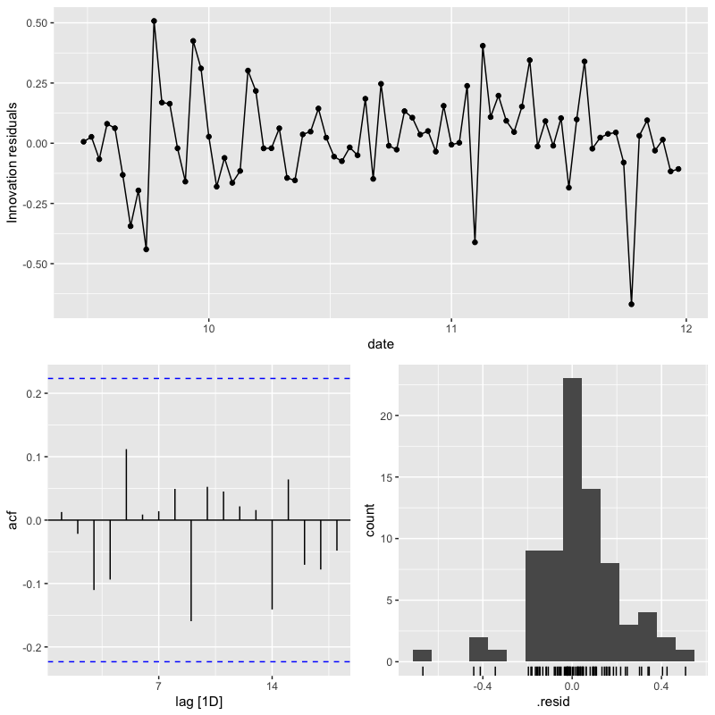
Figure 18: 診断プロット
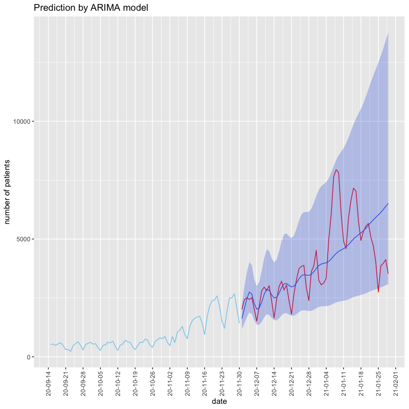
Figure 19: 予測値 (60日分，80%信頼区間)
構造が時不変と考えられる区間を捉えれば
の組み合わせである程度の分析は可能
関数 fable::forecast()
forecast(object, h, ...)
#' object: モデルの推定結果
#' h: h期先の予測
?fable::forecast.X (Xはモデル名)を参照典型的な使い方
as_tsibble(AirPassengers) |>
model(ARIMA(log(value))) |>
forecast(h = 36) |> autoplot(AirPassengers)
fabletools::autoplot.fbl_ts() が利用される
関数 fable::ETS()
ETS(formula, opt_crit = c("lik", "amse", "mse", "sigma", "mae"),
nmse = 3, bounds = c("both", "usual", "admissible"),
ic = c("aicc", "aic", "bic"), restrict = TRUE, ...)
#' formula: 時系列モデル
#' opt_crit: モデルの最適化の指標
#' ic: モデル選択のための情報量規準
#' その他詳細は '?fable::ETS' を参照
典型的な使い方
as_tsibble(AirPassengers) |>
model(ETS(value ~ season("M"))) |>
components() |> autoplot()
AirPassengers データを用いて分析・予測を行いなさい